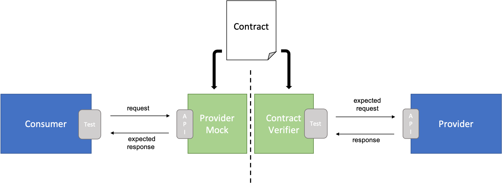

Why Contract Testing?
Challenges
- üîÑ Complex service dependencies
- ⚠️ API compatibility issues
- üêå Slow end-to-end testing
- üíî Fragile integration points
Benefits
- ✅ Early feedback on integration issues
- üöÄ Independent service deployment
- üìù Clear API expectations
- üîí Reliable service integration

Contract Testing Approaches
Consumer-Driven Contract (CDC)
1
Consumer Writes Contract
Defines expected behavior and responses
2
Provider Implements & Verifies
Ensures API meets consumer expectations
3
Consumer Tests with Stubs
Uses generated stubs for integration testing
Management Challenges
- • Complex N-N relationships between consumers and providers
- • GitOps complications with contract management
- • Provider becomes dependent on consumer updates
Key Characteristics
- ✓ Consumer needs drive API design
- ✓ Clear documentation of actual usage
- ✓ Early breaking change detection
- ⚠️ Requires strong team coordination
Best Practices
- • Centralized contract repository
- • Automated contract verification in CI/CD
- • Clear contract ownership and update process
Provider-Driven Contract (PDC)
1
Provider Defines Contracts
Creates and maintains API contracts
2
Generate & Run Tests
Automated test generation and verification
3
Optional Consumer Integration
Consumers can use generated stubs
Provider Control
- ✓ Full control over API evolution
- ✓ Easier contract management
- ✓ Simplified test generation
- ⚠️ May miss consumer requirements
Integration Challenges
- • Consumers not required to use stubs
- • Changes only detected through new builds
- • Potential gap in real usage validation
Recommendations
- • Regular contract reviews with consumers
- • Automated stub distribution
- • Clear change communication process
OpenAPI-Driven Contracts
1
OpenAPI Document Creation
Write or generate OpenAPI spec
2
Add x-contract Fields
Enhance with test data
3
Generate Assets
Create stubs and tests
4
Verify Implementation
Run against application code
Advantages
- ✓ API-First approach promotion
- ✓ Automated stub generation
- ✓ Consistent documentation
- ✓ Reduced manual effort
Limitations
- • Manual x-contract field addition
- • No runtime document usage
- • Limited IDE support
- • Cannot test business logic
Alternative Approach: open-api-diff
Key Features
Breaking Change Detection
Automatically identifies API compatibility issues between versions
CI/CD Integration
Seamlessly fits into existing pipelines
Low Overhead
Minimal setup and maintenance required
Considerations
Limitations
- • Only structural validation
- • No business logic testing
- • Depends on OpenAPI quality
Best Use Cases
- • API evolution monitoring
- • Breaking change prevention
- • Quick feedback in CI/CD
Approach Comparison
| Criteria | CDC | PDC | OpenAPI-Driven | open-api-diff |
|---|---|---|---|---|
| Setup/Writing Effort | ||||
| Meeting Consumer Expectations | ||||
| Provider API Flexibility | ||||
| Business Logic Test Coverage | ||||
| API Signature Validation | ||||
| Regression Protection | ||||
| Contract Generation Automation | ||||
| "Wrong Feature Validation" Risk | ||||
| Maintenance Effort | ||||
| GitOps Complexity |